X-ray extension: Basics
Since the work of Beauchesne+23, Lenstool is able to use X-ray data to model the intra-cluster gas. It only requires to define a new section in the parameter file that will define the X-ray observation and needs to be activated per potential with a simple keyword.
How it works
To make it simple, the X-ray extension bring the ability of Lenstool to compute the 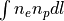 for a potential which allow to constraint the shape of the gas haloes with the count map and to also produce the related quantities as map. For now, only the dPIE are implemented and thus, we will focus on this potential to detail how it has been put in place.
dPIE
The analytical formulae associé au dPIE and that is unique to each potential is the computation of 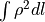. We use the equation presented in Bonamigo+17 and to define their elliptical counter part we use the same transformation as in Elıasdottir+07. As we are considering the sum of multiple potential there is two different interesting formulae. If we consider the 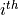 and 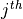 potentials, we have to compute 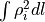 and 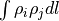 that are presented in equation 5 and 7 in Bonamigo+17. As we can see, these expressions only depends of the usual dPIE parameters. However, each of these potential does not have to only consist of gas, thus a gas fraction has to be defined for these X-ray activated potentials, which bring one more parameter to the potential. By default the gas fraction is fixed to one and it is the current recommended practice as it implies no assumption on the gas following the DM distribution. The gas fraction behave like any other potential parameter and can be optimised between 0 and 1.
The definition of a dPIE potential is then almost the same as without the X-ray extension and is the following:
potential O6
profile 81
x_centre -22.867836
y_centre 17.190451
ellipticity 0.133194
angle_pos -27.937929
core_radius_kpc 153.952651
cut_radius_kpc 1250.000000
v_disp 338.723340
X-ray 1
Gas_fraction 1.000000
z_lens 0.3475
end
As we can see there is only X-ray and Gas_fraction, the first being a boolean and can be set to 0 or 1 and the second is the previously discussed parameter. If other potential have to be implemented, they will follow the same pattern and just these two keywords will have to be added. The only exception is potentials that will follows some specific assumptions.
Plasma emission model
The model is separated in two parts, the hard coded and the user provided. The earlier is only the transformation from 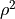 to 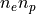 while the later is the final transformation from to the actual number of counts. The transformation of the mass to the proton and neutron density is the following:
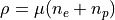
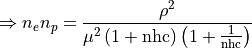
Where  and 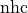 are the mean molecular weight per particle in a fully ionised gas and the conversion factor from 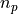 to
and 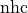 are the mean molecular weight per particle in a fully ionised gas and the conversion factor from 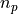 to  , respectively. For now, we hardcoded the value of this two parameters to the following work of Asplund+09. Here are their values:
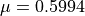 and 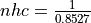
, respectively. For now, we hardcoded the value of this two parameters to the following work of Asplund+09. Here are their values:
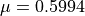 and 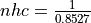
Regarding the user provided part, it comes with the set up of the optimisation constraint in the new X-ray section of the parameter file. Indeed, the factor that transform to the photon count have to be provided in the form of a map, the earlier integral being given in 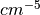. This map represent the plasma emission model time the exposure map and if we consider Chandra data, it can be obtained with the following procedure:
Create an exposure map in 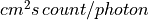 with merge_obs for example. See here.
Compute a the emission for your emission model in 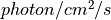 with calc_photon_flux. See here.
Normalize the emission from your model to a unitary emission in term of the mass of the gas. For an APEC model, this is equivalent to choosing the right norm (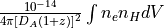 for 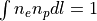). Using the following value:
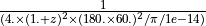 and setting
pixel_areakeyword to the pixel area of your exposure map in arcmin. These two things will perform the normalization correctly. Notably, the exposure map produced by data reduction pipelines of other X-ray observatory may be different as for XMM-Newton for example, where the map does not take into account the pixel size in 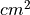. We thus take into account this differences by offering a keywordChandrato be set to if the pixel size is not in th exposure map.
if the pixel size is not in th exposure map.
We will now move to the optimisation section where we will continue on explaining the keyword of the X-ray and finally summarize them with the presentation of a complete section.
Optimisation
The optimisation is performed through a Monte Carlo method, with the Markov Chains Monte Carlo engine bayeSys implemented in the lenstool C code or through any optimiser with the Python wrapper of the Lenstool C library. Thus, it needs a loglikelihood which can be choose between a Poisson loglikelihood and a Poisson-gamma mixture loglikelihood. The earlier 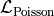 does not take into account an intrinsic errors due to the assumption of the modelling method in contrary to the latter 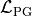. They are defined as follow:
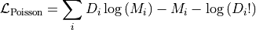
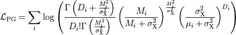
Where 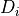 and  and 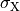 are the observed and the model count number in the bin. is the systematic uncertainty due to the method which can also be defined per bin. The computation of these likelihood will be automatically done is the
and 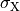 are the observed and the model count number in the bin. is the systematic uncertainty due to the method which can also be defined per bin. The computation of these likelihood will be automatically done is the X-ray section of the parameter file is properly defined (i.e. the plasma emission model) and set up for an optimisation. Such section looks like the following:
X-ray
pixel_area 0.00107584
Chandra 1
Optimization 1
Optimization_z 0.3475
bkg_map 3 S1063_bkg_map_fit.fits
count_map 3 S1063_count_map_fit.fits
count_factor_map 3 S1063_count_factor_map_fit.fits
intrinsic_error 1.0 1 0.01 1.0
end
Chandra and pixel_area have been defined in the previous section. bkg_map and count_map are the background and observed count map. The former is added the initial count model while the latter refers to the data that we want to fit. The count_factor_map is the map detailed in the previous section that make the link between and the photon count. We thus have three more keywords to set up the optimisation, with in first optimisation which can be 0 or 1 and represent a boolean to activate the computation of the likelihood. optimisation_z is the redshift of the gas modelled. Finally, intrinsic_error represent the systematic error and has the same syntax as an optimised parameter in the potfile section. The first floating value define its value, if its 0 a poisson likelihood will be computed if not the other if it is fixed. The following integer and floating values are defining the optimisation behavior and are the following:
0 0.01 1.0: First integer set to 0 means no optimisation and the two other values are ignored.1 min max: Optimisation with a uniform prior, with the bound defined as here.3 mean std: Optimisation with a gaussian prior.
Once that section has been defined, the model can be optimised by the MCMC engine included in C code which is bayeSys or any other optimiser/sampler through the python interface. There are example of how to use these other methods in the directory perl in the lenstool directory. See the following files :
dynamic_nested_sampler.py: Example withUltranestandDynestywith the creation of the normal output files of lenstoolpool_emcee_EnsembleSampler.py: Example withEmceewith the creation of thebayes.datandburnin.datsolely.
At the end of the optimisation or at the production of a chires.dat file, the code will generate the three following maps:
Xray_model_counts.fits: Maps that has the same size has the imput maps and contains in each pixel the value of the best-fit count model.Xray_residual_counts.fits: Same as before, but with the residual (i.e. Data-model)Xray_loglikelihood_pix.fits: Same as before, but each pixel contains the value of the loglikelihood associated.
These allows you to see the best-fit count model and see which part of the field are badly/betterly reproduced. These map can be created for other models than the best as long as you have a parameter file for them by using the usual lenstool method to produce map, which is by specifying them in the runmode section with the following lines:
X-ray 2 0 z_lens Xray_model_counts.fitsX-ray 3 0 z_lens Xray_residual_counts.fitsX-ray 4 0 z_lens Xray_loglikelihood_pix.fits
These lines have to be used one by one, as lenstool does not have the hability to create multiple maps of the same keywords at the same time. Here, the size of the maps are defined by the input maps, so the integer related to the number of pixel per row and column is 0.
In addition, other quantity related to the best-fit model can be found in the chires.dat that contains will contains the usual lines associated with the other likelihood defined such as the lensing one. Here is an example of the X-ray lines:
chi X-ray surface brightness
N_pixel 16900
Cash_Statistic -437152.56002
Cstat 4661.77537
log(likelihood) -33189.73608
Monte Carlo estimation of the quality of the fit: Mean: -32915.46507 Std: 87.35700
Interval 1 sigma: min -> -33002.06100 ||max -> -32829.06987
Interval 3 sigma: min -> -33177.52215 ||max -> -32648.07052
Interval 5 sigma: min -> -33255.71946 ||max -> -32599.59211
Where N_pixel contains the total number of pixel, the Cash_Statistic is equal to 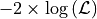 (Correct definition if 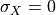). The Cstat is defined as follows:
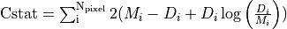
It is similar to the one implemented in Xspec or Sherpa. In case 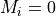, we replace the previous term in the sum by 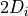. We added these two other likelihoods to provide a comparison with other X-ray fitting software. These lines also contains the results of the goodness of fit procedure presented in Beauchesne+23. The idea of this procedure is to see if the observed data are likely to be produced by the count model, ideally we would build such distribution by using the full posterior however for computing time reason we only use the best-fit model. Hence, we are sampling in each pixels 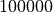 realisation of the associated distribution which is a Poisson distribution or the Poisson-Gamma mixture. The number of counts in the pixel is the mean of the Poisson distribution for the earlier when it is the mean of the Gamma distribution in the latter. This distribution have 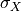 as standard deviation and the random variate defined is then the mean of the Poisson distribution of the mixture. We then compute the likelihood associated with each of the sample and extract the following information:
Monte Carlo estimation of the quality of the fit: Mean: Sample mean Std: Sample standard deviation
Interval 1 sigma: min -> percentile 16% ||max -> percentile 84%
Interval 3 sigma: min -> percentile .135% ||max -> percentile 99.865%
Interval 5 sigma: min -> percentile .0000286% ||max -> percentile 99.9999713%
From this information, you can see how likely the model will produce the observed data and set up a threshold for your own analysis and see how much you should complexify your model. To make an analogy with a gaussian likelihood, this criteria is computing an equivalent to the 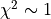 which does not exist for Poisson-like likelihood. Indeed, the value would be changing for each different case.
Data product implemented
For now, there are not much maps that can be produced by more will come as the extension is used. To create a map, here is the syntax to add in the runmode:
runmode
X-ray type N_pix z name_file
end
type (integer) is the type of map that you can produce, N_pix the number of pixel per column and row, z the redshift for which you would like to compute the map (that plane need to have some X-ray potential to not return only ) and finally the name of the fits file you want to create. Here are the type of map you can do:
- : Do nothing
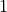: Map of the mass model (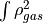) times the map provided through the
Emissivity_mapkeyword in theX-raysection. If the cooling function is provided, you will obtain the surface brightness. It can be used to create a count map by providing thecount_factor_mapin the previous keyword, the difference withtype is that the map is interpolated to be computed at the defined resolution with a bilinear interpolation.
is that the map is interpolated to be computed at the defined resolution with a bilinear interpolation.- : Count model with the same size as the input data map
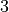: residual map with the same size as the input data map
 : Loglikelihood map with the same size as the input data map
: Loglikelihood map with the same size as the input data map
Type of maps to be implemented in the future:
Map of the projected gas mass
Map of the projected gas fraction
…
If the type of map that you would like to see is not implemented, you can contact us to see if we can put that in place.